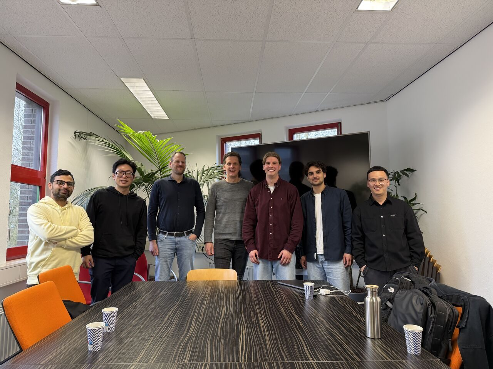
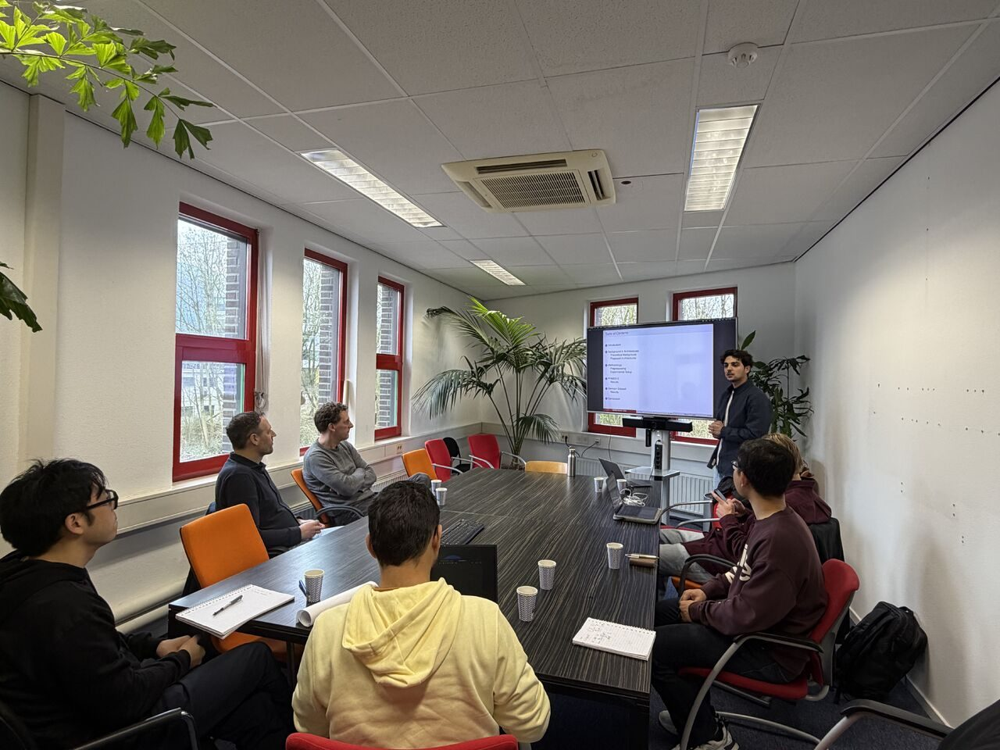
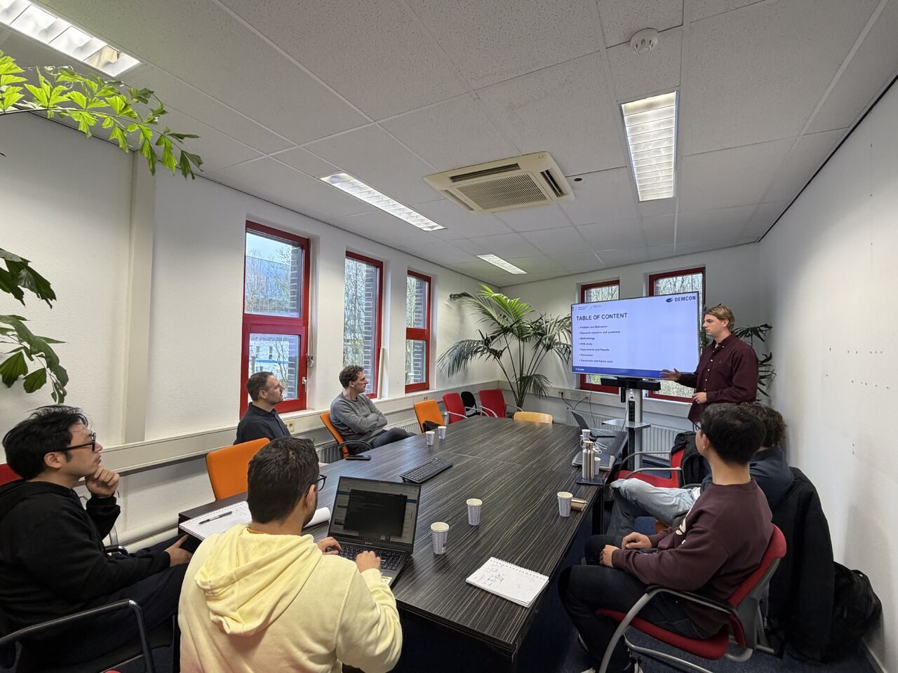

April 2026
Matthijs Neerhof and Dayon Benning had their master project final presentations
Matthijs Neerhof and Dayon Benning delivered the final presentations of their research projects:
- Tool Wear Classification Using Pretrained Vision Models and Multi-Signal Fusion
- Stability Lobe Analysis of Lathing Machines in CNC Manufacturing Lines
Both projects addressed highly relevant challenges in advanced manufacturing, with a strong focus on improving process reliability, product quality, and intelligent monitoring in CNC production environments.
The first project explored how pretrained vision models, combined with multi-signal data fusion, can support more robust and automated tool wear classification. The second project focused on stability lobe analysis for lathing machines, contributing to a better understanding of chatter stability and machining performance in industrial CNC lines.
Dr. Cheng is very pleased with their presentations and the work they carried out. Both students showed strong commitment, technical depth, and independence throughout their projects.
The group sincerely thanks Ger Folkersma, Remco Poelarends and Johan de Wit from Demcon high-tech systems for their support and guidance throughout the process, second supervisor Nabeel Younas, PMP®, and PhD students Hailong Liu and Wenbo Zhang.
Congratulations again to Matthijs and Dayon on this achievement, and best wishes for their future careers.


